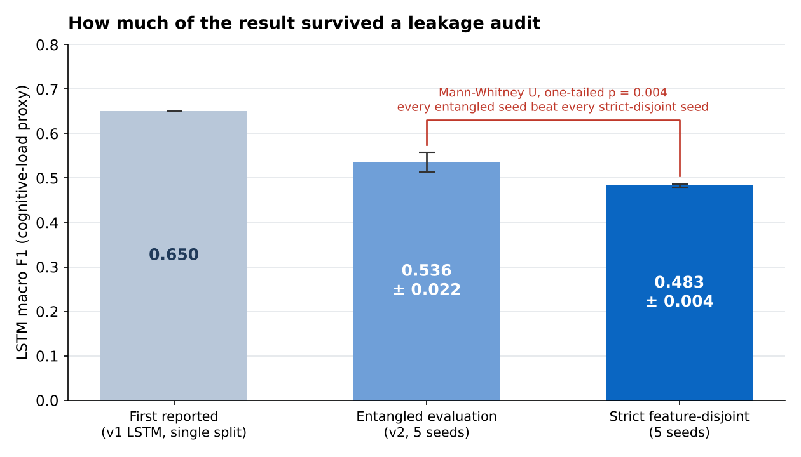
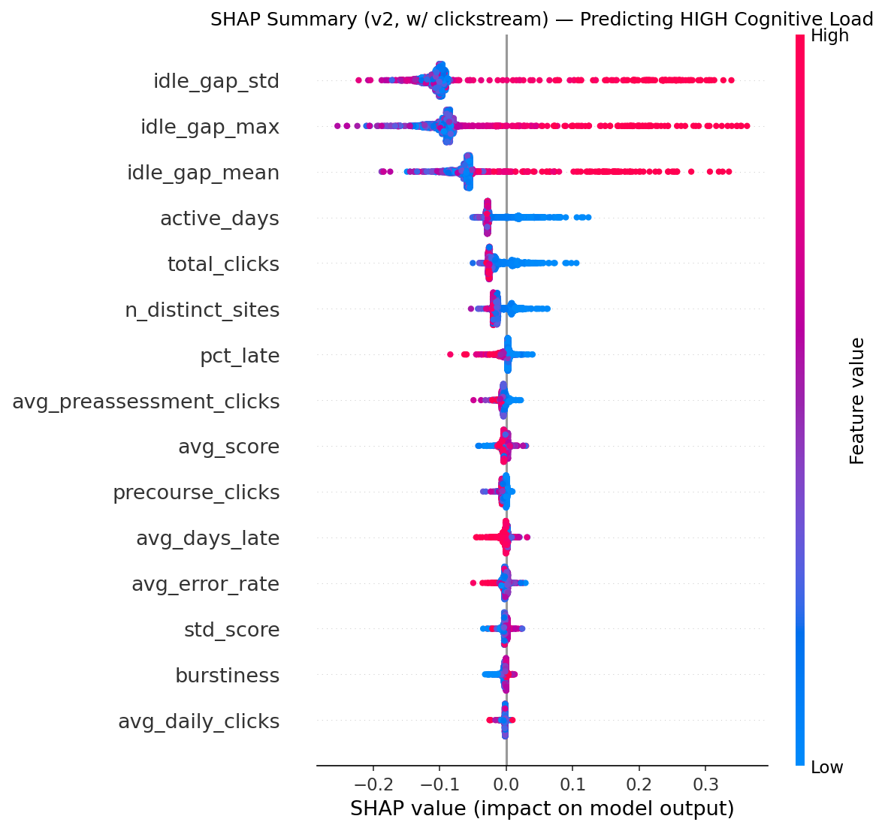
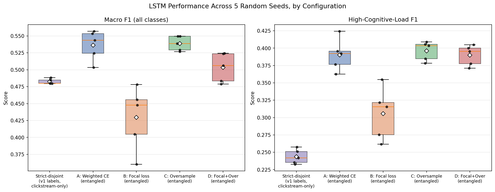

Machine learning · Sequence models · Explainable AI · Open Learning Analytics Dataset (OULAD)
Can clicks and submissions in a learning platform reveal when students are struggling, without eye-tracking, EEG or webcams? I built a log-based pipeline on the Open University Learning Analytics Dataset, then stress-tested my own results twice. The corrected answer is a more modest yes than I first found, and the way I found that out is the main contribution of the project.
OULAD has no direct measure of cognitive load, so the labels are clusters of struggle-related behavior. They track course outcomes (72% of the low-load group passed, versus 39% of the high-load group), but they are best read as an assessment-defined struggle proxy, not cognitive load in the full psychological sense.

My first LSTM looked promising, but its labels and inputs were built from related data, so the model could partly reconstruct its own labels. I rebuilt the test so that labels came only from assessment data and the model saw only clickstream data. Performance dropped from 0.536 to 0.483 macro F1, and the drop was consistent in every seed (Mann-Whitney U, p = 0.004). A real signal remains, but it is smaller than the first numbers suggested.

Irregular and long gaps between study sessions (idle_gap_std, idle_gap_max, idle_gap_mean) are the strongest signals of struggle. Students with more active days and more clicks are pushed toward lower load. For a teacher, this turns an opaque score into a concrete prompt: this student's study rhythm has become irregular, so it may be time to check in.

View Code on GitHub Read the Preprint All Research ← Back to Projects